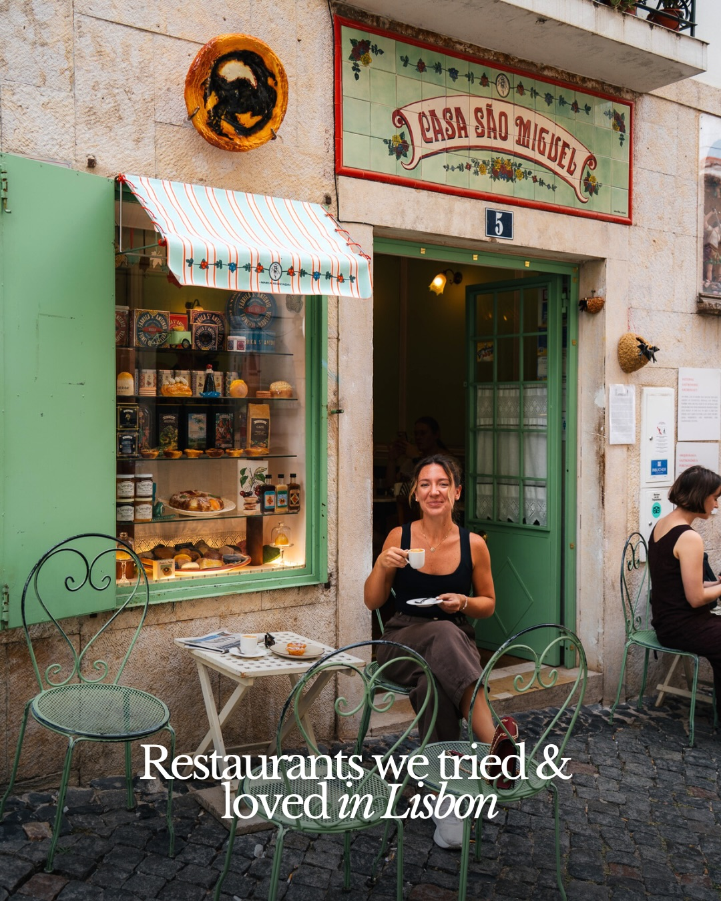
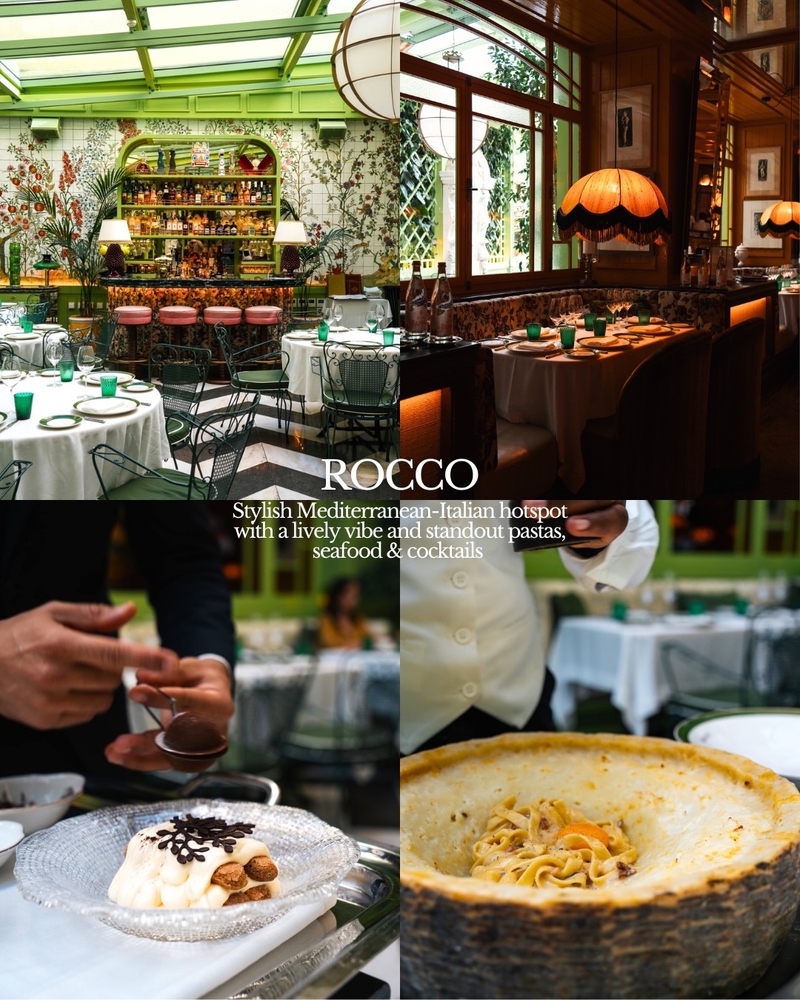
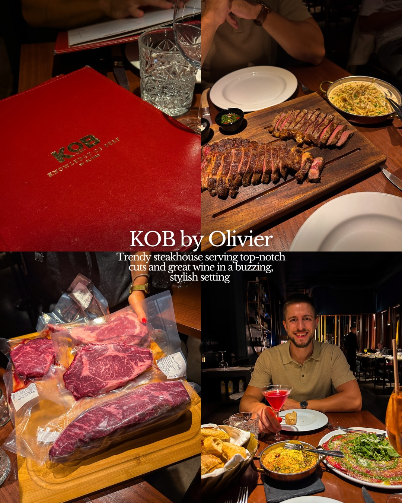
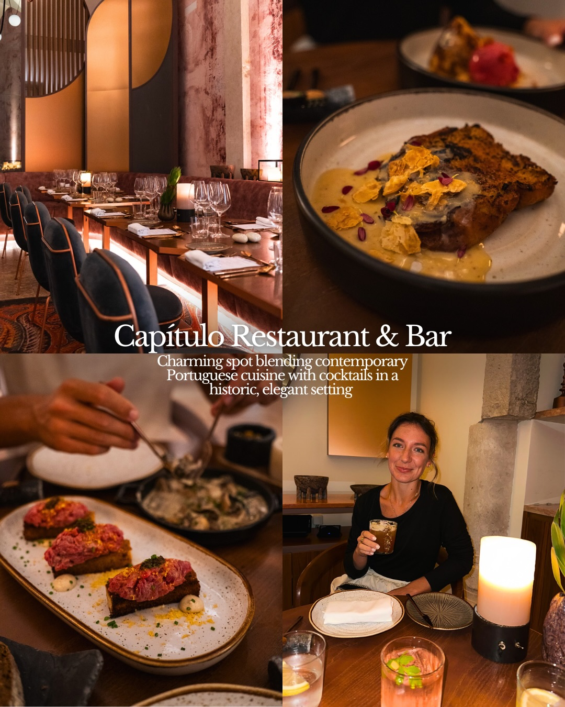
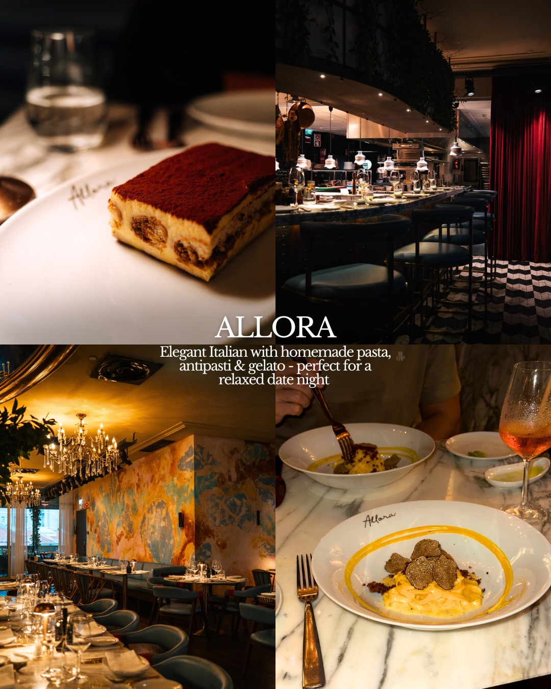
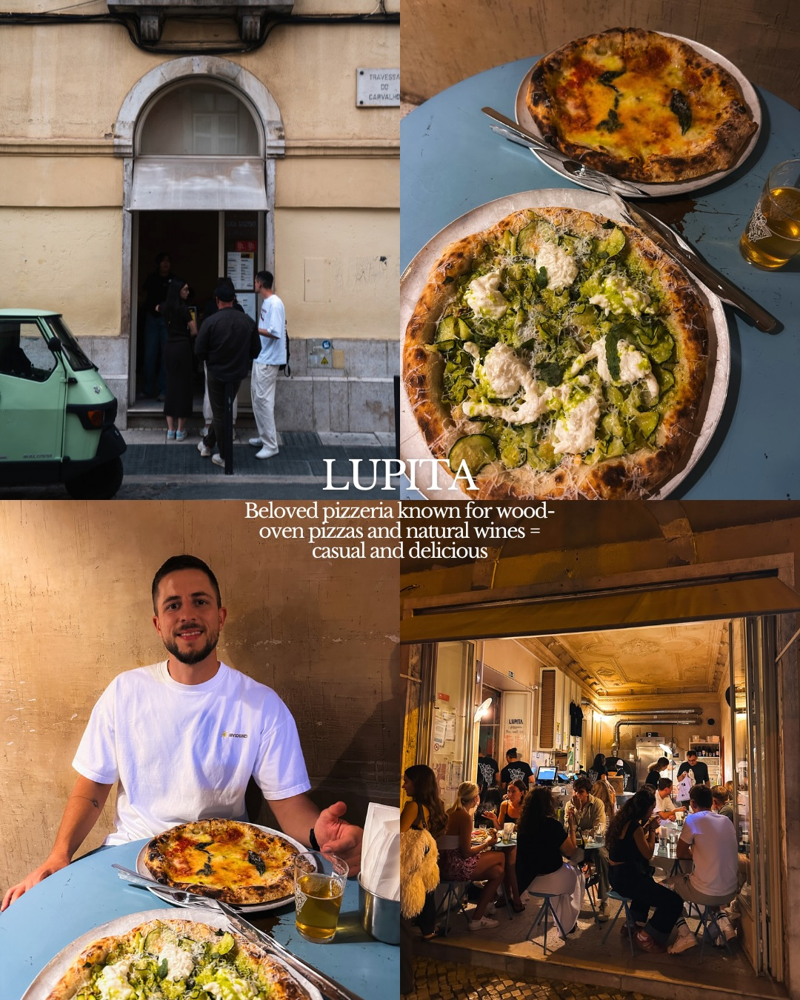
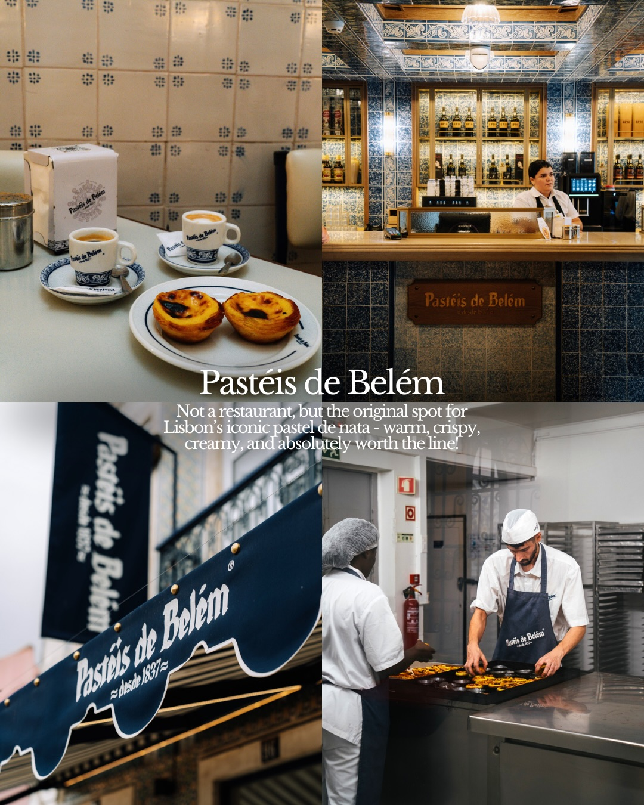

Instagram Post

CASA SÃO MIGUEL
carousel (8 slides) (enriched by ClaudeClaw)
Summary
CASA SÃO MIGUEL 5 Restaurants we tried & loved in Lisbon | CASA SÃO MIGUEL 5 Restaurants we tried & loved in Lisbon | ROCCO Stylish Mediterranean-Italian hotspot with a lively... | KOB KNOWLEDGE OF BEEF BY OLIVIER KOB by Olivier Trendy st... | Capítulo Restaurant & Bar Charming spot blending contempo... | Allora Elegant Italian with homemade pasta, antipasti & g... | TRAVESSA DO CARVALHO APE CI...
1
CASA SÃO MIGUEL 5 Restaurants we tried & loved in Lisbon
A woman sits at an outdoor cafe table on a cobblestone street, holding a small cup, in front of a shop with a green door and window display, and a tiled sign reading "CASA SÃO MIGUEL".
2
CASA SÃO MIGUEL 5 Restaurants we tried & loved in Lisbon
A woman sits at an outdoor cafe table, holding a small cup, in front of a building with a green door and window display, with another woman seated further inside.
3
ROCCO Stylish Mediterranean-Italian hotspot with a lively vibe and standout pastas, seafood & cocktails
The image is a collage featuring the interior of a stylish Mediterranean-Italian restaurant with a bar and dining tables, a close-up of a dessert being prepared, and pasta being served from a large cheese wheel.
4
KOB KNOWLEDGE OF BEEF BY OLIVIER KOB by Olivier Trendy steakhouse serving top-notch cuts and great wine in a buzzing, stylish setting
A four-panel collage depicts a steakhouse experience, featuring a menu, cooked steak, raw cuts of beef, and a man dining in a restaurant.
5
Capítulo Restaurant & Bar Charming spot blending contemporary Portuguese cuisine with cocktails in a historic, elegant setting
The image is a collage showing a restaurant interior, a close-up of a main dish, a close-up of appetizers, and a woman smiling while holding a drink at a table.
6
Allora Elegant Italian with homemade pasta, antipasti & gelato - perfect for a relaxed date night Allora Allora
This image is a four-panel collage showcasing an Italian restaurant's interior, including dining areas, a bar, and close-ups of dishes like tiramisu and pasta with truffles.
7
TRAVESSA DO CARVALHO APE CISTER LUPITA Beloved pizzeria known for wood-oven pizzas and natural wines = casual and delicious LUPITA
A four-panel collage depicts a pizzeria named Lupita, showing its exterior, interior with patrons, and close-ups of pizzas and drinks.
8
Pastéis de Belém Pastéis de Belém Pastéis de Belém Pastéis de Belém desde 1837 Pastéis de Belém Not a restaurant, but the original
All slides





